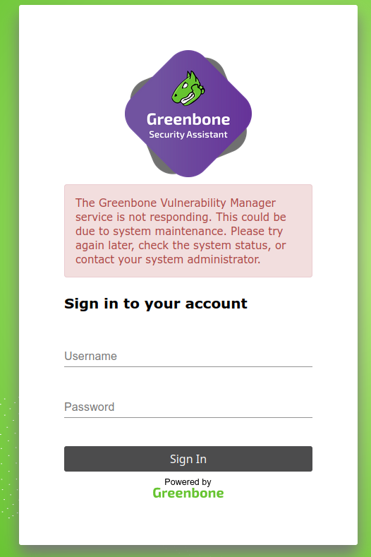

Greenbone Community Containers¶
Running the Greenbone Community Edition from containers requires knowledge about:
Using a terminal
Using docker
Running services via docker-compose
Additionally, a basic knowledge about the architecture of the Greenbone Community Edition is required to understand the setup.
Note
This guide is intended for users who want to test the newest features and/or want to get familiar with the Greenbone Community Edition. It is not intended for production setups.
It assumes that Debian Stable is used as the Linux distribution. Most likely, a Debian derivate like Ubuntu and Kali will also work with only minor adjustments required.
Introduction¶
This document provides a guide for running the Greenbone Community Edition from pre-build container images using Docker. It consists of a distributed service architecture, where each service is run in a dedicated container. The orchestration of these services is done via a docker-compose file.
With the Greenbone Community Containers, it is possible to scan your local network independent of the underlying operating system, installed software and tool chains.
Prerequisites¶
Note
Please follow the guide step by step. Later steps might require settings or output of a previous command.
The command sudo is used for executing commands that require privileged access on the system.
Installing Docker¶
docker is required for running the services within containers. Docker can be installed by running
sudo apt install docker.io
Installing docker-compose¶
docker-compose is required for starting and connecting the services of the Greenbone Community Edition. The description of the service orchestration is done by using compose files. A compose file for the Greenbone Community Edition is provided later on.
sudo apt install docker-compose
Setup¶
To allow the current user to run docker and therefore start the containers, they must be added to the docker user group. To make the group change effective, either logout and login again or use su.
sudo adduser $USER docker
su $USER
For downloading the Greenbone Community Edition docker compose file, a destination directory should be created.
export DOWNLOAD_DIR=$HOME/greenbone-community-container && mkdir -p $DOWNLOAD_DIR
Docker Compose File¶
To run the Greenbone Community Edition with containers, the following compose file should be used:
version: '3.7'
services:
redis-server:
image: greenbone/redis-server
restart: on-failure
cap_drop:
- ALL
volumes:
- redis_socket_vol:/run/redis/
gpg-data:
image: greenbone/gpg-data:latest
volumes:
- gpg_data_vol:/mnt
pg-gvm:
image: greenbone/pg-gvm:stable
restart: on-failure
volumes:
- psql_data_vol:/var/lib/postgresql
- psql_socket_vol:/var/run/postgresql
gvmd:
image: greenbone/gvmd:stable
restart: on-failure
volumes:
- gvmd_data_vol:/var/lib/gvm
- vt_data_vol:/var/lib/openvas
- psql_data_vol:/var/lib/postgresql
- gvmd_socket_vol:/run/gvmd
- ospd_openvas_socket_vol:/run/ospd
- psql_socket_vol:/var/run/postgresql
depends_on:
- pg-gvm
gsa:
image: greenbone/gsa:stable
restart: on-failure
ports:
- 9392:80
volumes:
- gvmd_socket_vol:/run/gvmd
depends_on:
- gvmd
ospd-openvas:
image: greenbone/ospd-openvas:stable
restart: on-failure
cap_add:
- NET_ADMIN # for capturing packages in promiscuous mode
- NET_RAW # for raw sockets e.g. used for the boreas alive detection
security_opt:
- seccomp=unconfined
- apparmor=unconfined
volumes:
- gpg_data_vol:/etc/openvas/gnupg
- vt_data_vol:/var/lib/openvas
- ospd_openvas_socket_vol:/run/ospd
- redis_socket_vol:/run/redis/
depends_on:
- redis-server
- gpg-data
volumes:
gpg_data_vol:
gvmd_data_vol:
psql_data_vol:
vt_data_vol:
psql_socket_vol:
gvmd_socket_vol:
ospd_openvas_socket_vol:
redis_socket_vol:
Download¶
It is possible to just copy and paste the docker compose file. Alternatively, it can be downloaded with the following command directly:
cd $DOWNLOAD_DIR && curl -f -O https://greenbone.github.io/docs/latest/_static/docker-compose.yml
Description¶
The following table describes the provided containers of the docker compose file and their services in detail.
Container |
Service |
Description |
|---|---|---|
redis-server |
A redis server with an adjusted config. Used to store VT data and scan results by the scanner. |
|
gpg-data |
A container that copies a GPG keyring with Greenbone’s public signing keys into the |
|
pg-gvm |
A PostgreSQL database cluster setup for use with gvmd. The actual data is stored in the |
|
gvmd |
gvmd |
A container for gvmd that uses unix sockets in volumes to communicate with the PostgreSQL database and ospd-openvas scanner. The downloaded feed data is stored in the |
gsa |
gsad |
A container running the gsad web server for providing the web application GSA. The web interface is available at localhost on port 9392. For communication with gvmd, a unix socket in a volume is used. |
ospd-openvas |
ospd-openvas |
A container providing the vulnerability scanner. The VT data from the feed is stored in the |
Starting the Greenbone Community Containers¶
Using the docker compose file, the container images can be downloaded (pulled) and the containers can be started in the background.
docker-compose -f $DOWNLOAD_DIR/docker-compose.yml -p greenbone-community-edition pull
docker-compose -f $DOWNLOAD_DIR/docker-compose.yml -p greenbone-community-edition up -d
To get a continuous stream of the log output of all services, run the following command:
docker-compose -f $DOWNLOAD_DIR/docker-compose.yml -p greenbone-community-edition logs -f
The log stream can be stopped by pressing Ctrl-C.
Performing a Feed Synchronization¶
Note
The duration of downloading the data during the synchronization depends on the network connection and server resources.
For the actual vulnerability scanning, Vulnerability Test scripts, security information like CVEs, port lists and scan configurations are required. All this data is provided by the Greenbone Community Feed and must be download initially before starting a vulnerability scan.
Note
A synchronization always consists of two parts:
Downloading the changes via rsync
Loading the changes by a daemon into memory and a database
Both steps may take a while, from several minutes up to hours. Especially for the initial synchronization. Only if both steps are finished, the synchronized data is up-to-date and can be used.
Syncing Vulnerability Tests¶
VT data contains .nasl files for creating results during a vulnerability
scan. The .nasl files are processed by the OpenVAS scanner.
Syncing SCAP, CERT and GVMD Data¶
Note
If one of the following commands show Sync in progress, exiting., a
synchronization is still ongoing and gvmd may still load data. For example,
if you find gvmd: OSP: Updating NVT cache in your processes list, the
daemon is loading VT data from ospd-openvas. An additional process title can be
gvmd: Syncing SCAP: Updating CVEs. In that case, you have to re-try after it
has finished.
SCAP data contains CPE and CVE information.
docker-compose -f $DOWNLOAD_DIR/docker-compose.yml -p greenbone-community-edition \
exec -u gvmd gvmd greenbone-feed-sync --type SCAP
The SCAP data is loaded and the synchronization is finished when the log
contains the update_scap_end: Updating SCAP info succeeded message.
CERT data contains vulnerability information from the German DFN-CERT and CERT-Bund agencies.
docker-compose -f $DOWNLOAD_DIR/docker-compose.yml -p greenbone-community-edition \
exec -u gvmd gvmd greenbone-feed-sync --type CERT
The CERT data is loaded and the synchronization is finished when the log
contains the sync_cert: Updating CERT info succeeded. message.
gvmd data (or also called data-objects) are scan configurations, compliance policies, port lists and report formats.
docker-compose -f $DOWNLOAD_DIR/docker-compose.yml -p greenbone-community-edition \
exec -u gvmd gvmd greenbone-feed-sync --type GVMD_DATA
Setting up an Admin User¶
Warning
By default, a user admin with the password admin is created. This is insecure and it is highly recommended to set a new password.
To create the administrator user with a password of your choice instead of the generated password, the following command can be used:
docker-compose -f $DOWNLOAD_DIR/docker-compose.yml -p greenbone-community-edition \
exec -u gvmd gvmd gvmd --create-user=admin --password=<password>
Starting the Vulnerability Management¶
After the services have started and all data has been loaded, the Greenbone Security Assistant web interface – GSA – can be opened in the browser.
xdg-open "http://127.0.0.1:9392" 2>/dev/null >/dev/null &
The browser will show the login page of GSA and after using the credentials created before, it is possible to start with vulnerability scanning.

Greenbone Security Assistant after logging in for the first time¶
Workflows¶
Update the Greenbone Community Containers¶
To update the Greenbone Community Containers to the latest version, it is required to pull the images and restart the containers which have new images. This can be done with
docker-compose -f $DOWNLOAD_DIR/docker-compose.yml -p greenbone-community-edition pull
docker-compose -f $DOWNLOAD_DIR/docker-compose.yml -p greenbone-community-edition up -d
Starting from Scratch¶
To start from scratch, the containers must be stopped. Afterwards, the containers and volumes must be removed to delete all data. All this can be done by running
docker-compose -f $DOWNLOAD_DIR/docker-compose.yml -p greenbone-community-edition down -v
Gain a Terminal for a Container¶
If you want to debug something in a container, install additional software, take a look at the file content, or change some configuration, it is possible to gain shell access to a container.
To access a container with a bash shell as a root user, you can run
docker-compose -f $DOWNLOAD_DIR/docker-compose.yml -p greenbone-community-edition exec <container-name> /bin/bash
Afterwards, you can execute standard bash commands within the running container.
Troubleshooting¶
VTs are Up-to-Date but Not Visible on the Web Interface¶
It may be possible, especially for the initial synchronization, that the scanner does not notice new VT files have arrived. Therefore, it is best to restart the scanner.
Port List, Scan Configurations, Report Formats are Up-to-Date but Not Visible on the Web Interface¶
If port lists, scan configurations or report formats are missing on the web interface, you may run
docker-compose -f $DOWNLOAD_DIR/docker-compose.yml -p greenbone-community-edition \
exec -u gvmd gvmd gvmd --rebuild-gvmd-data=all
to force gvmd to reload the data from the file system.
Cannot Log in to the Web Interface: Greenbone Vulnerability Manager service is not responding¶
If it is not possible to log in to the web interface and the following error message is shown
and/or the logs contain a Failed to connect to server at /run/gvmd/gvmd.sock: Connection refused
message, the gvmd container must be restarted. It is very likely it
had some issues accessing the PostgreSQL database.
Errors while starting pg-gvm container¶
While starting up the pg-gvm container, some errors are displayed. For example
createuser: error: creation of new role failed: ERROR: role "gvmd" already exists
or ERROR: extension "uuid-ossp" already exists.
The code behind these errors tries to set up the database. If the database is already initialized, all tables, users, permissions and extensions exist, errors are raised. At the moment, it is not possible to silence these errors but they can be ignored safely.

{kind=link}